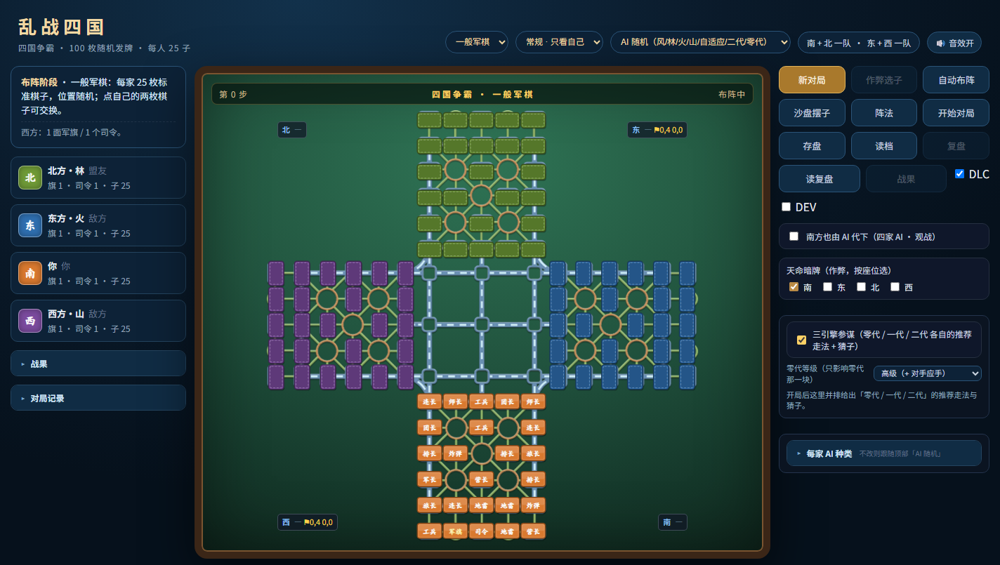
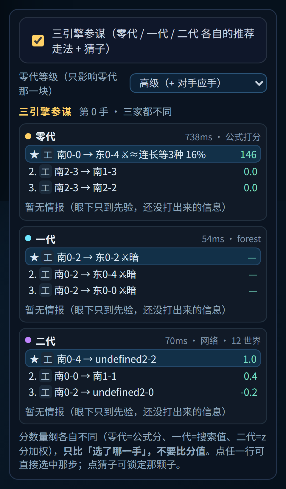
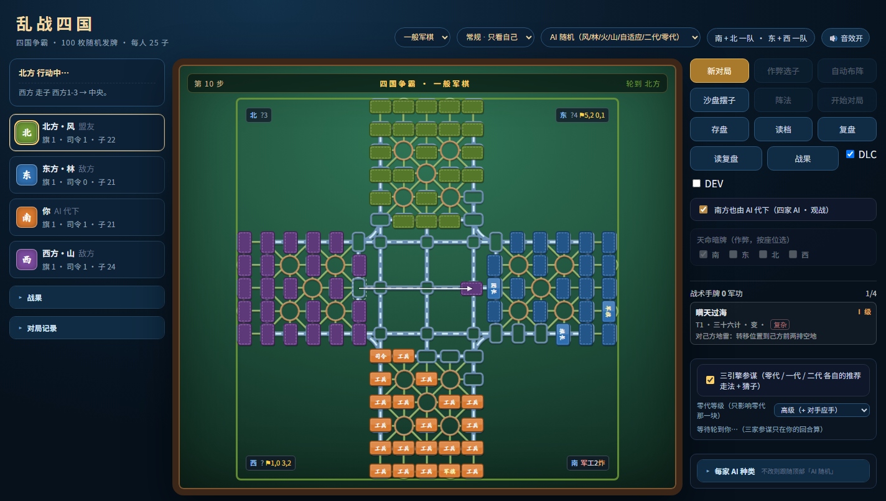
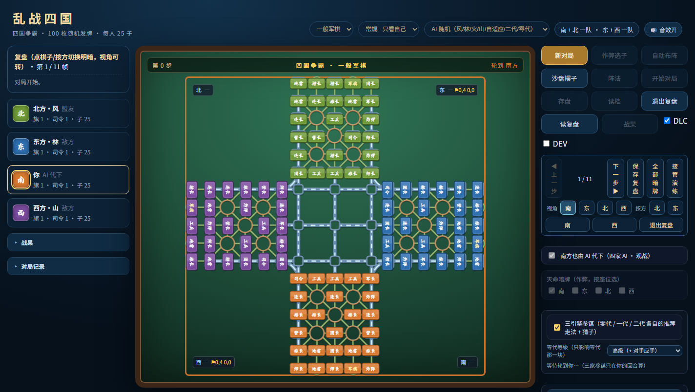

index.html，用 Chrome 或 Edge 打开。你执南方（棋盘下方），北方是你的队友，东、西两家是对手，都由 AI 操作。

python -m http.server 8000，
然后浏览器访问 http://localhost:8000（装过 Python 才有这个命令）。
整页分四块：
| 区域 | 有什么 |
|---|---|
| 顶部 | 模式下拉（乱战四国 / 一般军棋）、信息模式（常规 / 双明 / 全明）、AI 随机方式、音效开关。 |
| 左侧 | 当前状态、四家角色（谁出局、剩几子）、战果、对局记录。战果和记录默认是收起的，点标题展开。 |
| 中间 | 棋盘。上方一行是「第几步 / 模式 / 轮到谁」，轮到哪家时棋盘内框会亮起那家的颜色。 |
| 右侧 | 新对局 / 作弊选子 / 自动布阵 / 沙盘摆子 / 阵法 / 存盘 / 读档 / 复盘 / 三引擎参谋 / 每家 AI 种类。 「每家 AI 种类」默认收起。 |
| 一般军棋（默认） | 乱战四国 | |
|---|---|---|
| 发牌 | 每家一套完全相同的 25 子，位置随机 | 100 枚棋子随机分 4 家，每家 25 枚（阵容可能残缺或重复） |
| 军旗 / 司令 | 每家 1 面旗、1 个司令 | 可能 0～2 面旗、0～4 个司令 |
| 地雷 | 3 枚，只能放后两排 | 3 枚，8 枚以上时可放倒数第三排 |
| 大本营 | 营内子按正常大小比较 | 营内子小于任何外子，所有子都能攻营 |
| 碰雷 | 非工兵撞雷，攻方死、雷保留 | 除工兵外两子同归于尽 |
| 多旗 / 升旗 | 没有 | 有，规则见第五节 |
切换模式会直接开新局。
最后一个司令阵亡且手里没有军旗时，点一个大本营升旗，之后那个营被攻占就输。
三套是三代不同的技术路线，都只能用「自己看得见的子 + 公开战报」推理，不会偷看暗子。
| 引擎 | 怎么想棋 | 特点 |
|---|---|---|
| 零代 2007 逆向复刻 |
按 2007 年《四国争霸》的原版公式给每一步打分，不算对手应手。 | 出手快、风格直来直去，会走出一些「原版味」的怪招。适合当陪练。 |
| 一代 搜索 + 信念 |
先推断每个暗子「可能是哪几种棋」，再把暗子按概率补全成若干完整局面分别搜索，取平均分选着。 | 最强的一套。四种风格：风（快攻）/ 林（稳守）/ 火（凶狠）/ 山（厚实），另有「自适应」按局面切换。 |
| 二代 神经网络克隆 |
从人类对局学出来的走法网络，直接给候选着打分，再抽若干世界复算。 | 下得像人，节奏平稳，读牌不如一代透，但更少「机器味」。 |
顶部「AI 随机」让每个 AI 座位从上述引擎里各抽一个；想让某一家固定，就到右栏「每家 AI 种类」里单独指定。

右栏勾上「三引擎参谋」后，你回合时面板会把零代 / 一代 / 二代各自推荐的走法并排列出来，谁也不许替你落子。
下面还会列猜子——对敌方暗子的判断。这块要注意两点：

鼠标悬停在猜测上，会写清「凭什么这么猜」。角标含义：
| 角标 | 证据 | 它支持什么结论 |
|---|---|---|
| 锁 | 硬约束：身份域里只剩同一档（比如「吃了我方旅长 ⇒ 只能是司/军/师」） | 直接就是这个档位，算充分证据 |
| 吃 | 它吃过我方的子。人类吃掉我方团/营级时，六到七成上的是大子 | 大 |
| 区 | 它开局所在的那个区域已经有明大子（或已确认的大子阵亡） | 小（一个区的大子名额有限） |
| 位 | 这一格的「经验位置先验」（从一万多份人类布阵里统计的） | 该格历史上最常放的档位 |
| 阵 | 兼容的阵法库里这一档占比 | 该档 |
点「沙盘摆子」进一个自由局面：点兵种再点格放置，放好的子可以取回；可以「填满本方 / 清空本方」， 然后「开始对弈」让四家 AI 从这个局面接着下。用来验某个残局或某个想法。
复盘任意一帧时可以让 AI 从这个局面接着下（"如果当时走别的会怎样"），也可以先摆子再让它演替。

司令 1、军长 1、师长 2、旅长 2、团长 2、营长 2、连长 3、排长 3、工兵 3、地雷 3、炸弹 2、军旗 1。
大小顺序：司令 > 军长 > 师长 > 旅长 > 团长 > 营长 > 连长 > 排长 > 工兵。 同级相碰同归于尽。
| 文件 | 作用 |
|---|---|
index.html | 入口，双击它开始 |
style.css | 界面样式 |
board.js game.js | 棋盘模型与规则（走子、碰子、胜负） |
ui.js | 棋盘绘制、交互、复盘、参谋面板 |
ai.js | 一代 AI（搜索 + 信念） |
ai_gen0.js | 零代 AI（2007 公式） |
bc_ai.js bc_model_data.js | 二代 AI 与它的网络权重（这个文件 26MB，是这个文件夹体积的大头） |
formations*.js | 883 套开局阵法（含从人类对局里抽出的 800 套） |
pos_prior_data.js zone_pair_data.js eat_rank_data.js | 从人类对局统计出来的经验表：位置先验、区域大子分布、吃子习惯 |
qq_layout.js assets/qq_board.png | 棋盘坐标映射与底图（文件名沿用旧名，不用改） |
sounds/*.wav | 走子 / 吃子 / 阵亡 / 亮旗音效 |
agent.js | 「外援」代理：把某一家的走子交给外部程序（不接也能正常玩） |
介绍.html | 就是这个文件 |
index.html 拖出来会打不开。
要分享就整个文件夹打包。
浏览器拦了本地文件的脚本。换 Edge 试，或按第一节的办法起一个本地服务器。
每步上限 1.5 秒，一代在这个预算里最吃 CPU。想快就在「每家 AI 种类」里把对手换成二代或零代。
那些存在浏览器的 localStorage 里，跟着浏览器走，不跟文件夹走。要带走就在旧机器上「存盘」导出。
见第六节末尾：单条经验不定罪。想让它更敢说，可以看角标——两个角标以上的才是它真有把握的。
这个包里没有联网对战。只有「外援模式」可以把某一家交给外部程序（需要另配，见开发文档）。
全部是明文 JavaScript，可以直接改。改了记得备份原文件。